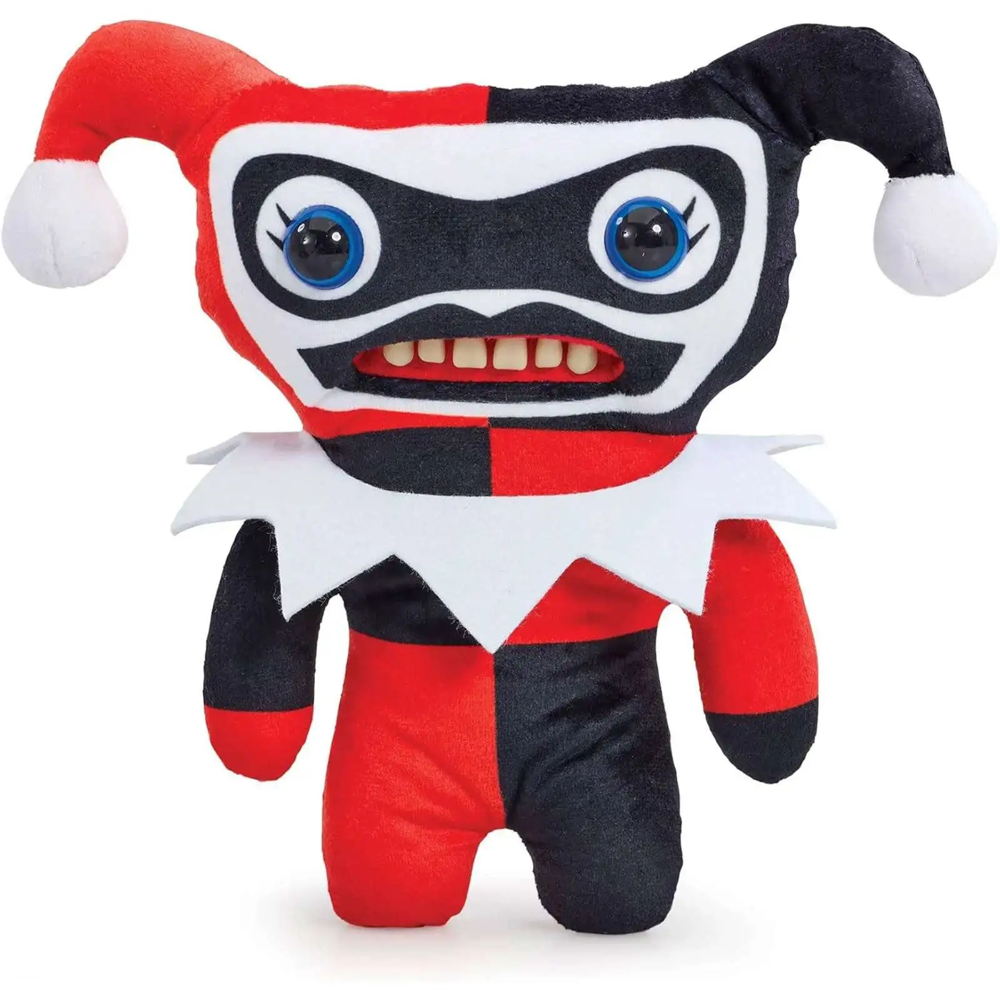

Perfil de Coleccionista
Usuario: Quirón
Nivel de Caos: Maestro Adopta-Monstruos
Fugglers Adoptados: 10
Colección Guardada en tu Perfil (10 Productos)

Teddy Nightmare
GuardadosAñadido a tu lista de favoritos.
Estatus: Adoptado

Fuzzy Wuzzy
GuardadosPeluche extremadamente suave y peligroso.
Estatus: Adoptado

Slobber Chimp
GuardadosBabea sin parar en tu repisa.
Estatus: Adoptado

Psycho Rabbit
GuardadosConejo con orejas desiguales y mirada fija.
Estatus: Adoptado

Grumpy Cat Fugg
GuardadosMonstruo felino de mal humor eterno.
Estatus: Adoptado

Stitched Blob
GuardadosCuerpo lleno de parches y botones.
Estatus: Adoptado

Snaggle Tooth
GuardadosDiente canino sobresaliente.
Estatus: Adoptado

Cyclops Fugg
GuardadosUn solo ojo gigante en medio de la cara.
Estatus: Adoptado

Triclops Madness
GuardadosTres ojos inquietantes que te observan.
Estatus: Adoptado

King Fuggler
GuardadosEdición real con corona de trapo.
Estatus: Adoptado